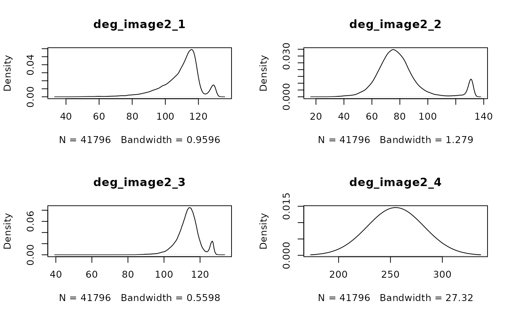

Plot distribution of intensity values using either a density plot or a histogram. Useful for finding image artefact outliers and determining reasonable scaling cutoffs.
Usage
distGiottoImage(
gobject = NULL,
image_type = "largeImage",
image_name = NULL,
giottoLargeImage = NULL,
method = c("dens", "hist"),
show_max = TRUE,
...
)Arguments
- gobject
giotto object
- image_type
image object type (only supports largeImage and is set as default)
- image_name
name of image object to use
- giottoLargeImage
giotto large image object
- method
plot type to show image intensity distribution
- show_max
logical. Plot the set max intensity as a vertical red line
- ...
additional params to pass to
terra::hist()orterra::density()
Plotting method 'dens'
Density plot of intensity values for image objects. N total values examined. Bandwidth refers to the curve smoothing value applied.
Examples
g <- GiottoData::loadGiottoMini("visium")
#> 1. read Giotto object
#> 2. read Giotto feature information
#> 3. read Giotto spatial information
#> 3.1 read Giotto spatial shape information
#> 3.2 read Giotto spatial centroid information
#> 3.3 read Giotto spatial overlap information
#> 4. read Giotto image information
#> python already initialized in this session
#> active environment : 'giotto_env'
#> python version : 3.10
distGiottoImage(g, image_name = "image")
